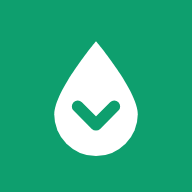

Privacy
Ultimo aggiornamento: 12 ottobre 2026
In breve
Pumpy non ha account, non chiede nome né email, non usa pubblicità e non traccia cosa fai. Quasi tutto resta sul tuo telefono. Solo se attivi gli avvisi salviamo il minimo indispensabile per mandarteli.
Chi siamo
Pumpy è sviluppata da Pumpy Labs (Francesco Luigi Cerulli, Modena). Per qualsiasi domanda sulla privacy scrivi a info@pumpy.it.
Cosa resta solo sul tuo telefono
- Posizione: serve a mostrarti i distributori vicini. Viene usata dal telefono e non la inviamo a noi (salvo quanto scritto sotto per gli avvisi). Puoi negarla: l'app funziona lo stesso cercando sulla mappa.
- Preferiti, carburante scelto, profilo dell'auto, filtri: salvati nella memoria del browser o dell'app. Si cancellano disinstallando l'app o cancellando i dati del sito.
Cosa salviamo se attivi gli avvisi
Gli avvisi sono facoltativi. Se li attivi, il nostro servizio (ospitato su Cloudflare) conserva:
- l'indirizzo tecnico per le notifiche che il tuo telefono genera (non contiene il tuo nome né il numero);
- i distributori preferiti e il carburante scelto;
- la provincia e una posizione approssimata a circa 1 km, per avvisarti quando conviene fare il pieno in zona.
Usiamo questi dati solo per mandarti gli avvisi. Li cancelliamo quando disattivi gli avvisi dall'app, oppure automaticamente quando il telefono smette di accettarli (per esempio se disinstalli l'app).
Come cancellare i tuoi dati da Pumpy
Pumpy (sviluppatore: Pumpy Labs) conserva dati solo se hai attivato gli avvisi. Per cancellarli hai due strade:
- Dall'app, subito: apri Pumpy, tocca Avvisi attivi e scegli Spegni gli avvisi. Cancelliamo all'istante l'indirizzo per le notifiche, i distributori preferiti, il carburante scelto e la posizione approssimata.
- Per email: scrivi a info@pumpy.it con oggetto «Cancellazione dati». Li cancelliamo entro 30 giorni e ti confermiamo l'avvenuta cancellazione.
Non conserviamo copie né altri dati dopo la cancellazione. Preferiti, profilo auto e filtri salvati solo sul telefono si cancellano disinstallando l'app o cancellando i dati del sito dalle impostazioni del browser.
Servizi esterni
Per funzionare l'app scarica dati da alcuni servizi, che come qualsiasi sito ricevono l'indirizzo IP del dispositivo per poter rispondere:
- GitHub Pages: ospita l'app e i prezzi aggiornati;
- Cloudflare: mappa e servizio avvisi;
- Esri: vista satellitare e mappa di riserva;
- Google Fonts e cdnjs: caratteri e componenti della mappa.
Se apri le indicazioni stradali, passi a Google Maps, Apple Mappe o Waze, ciascuno con la propria privacy.
Da dove vengono i prezzi
I prezzi sono quelli comunicati dai gestori all'Osservatorio prezzi carburanti del Ministero delle Imprese e del Made in Italy (MIMIT), pubblicati come dati aperti (licenza IODL 2.0). Le previsioni sono stime statistiche, non garanzie. La mappa usa dati © OpenStreetMap.
I tuoi diritti
Puoi chiedere in qualsiasi momento di vedere o cancellare i dati degli avvisi scrivendo a info@pumpy.it, oppure disattivarli direttamente dall'app. Hai anche diritto di rivolgerti al Garante per la protezione dei dati personali.
Pumpy non è pensata per i minori di 14 anni e non raccoglie consapevolmente i loro dati.